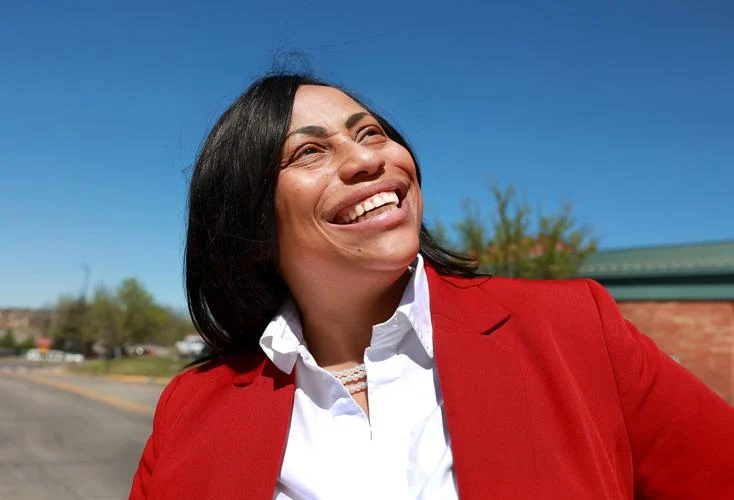
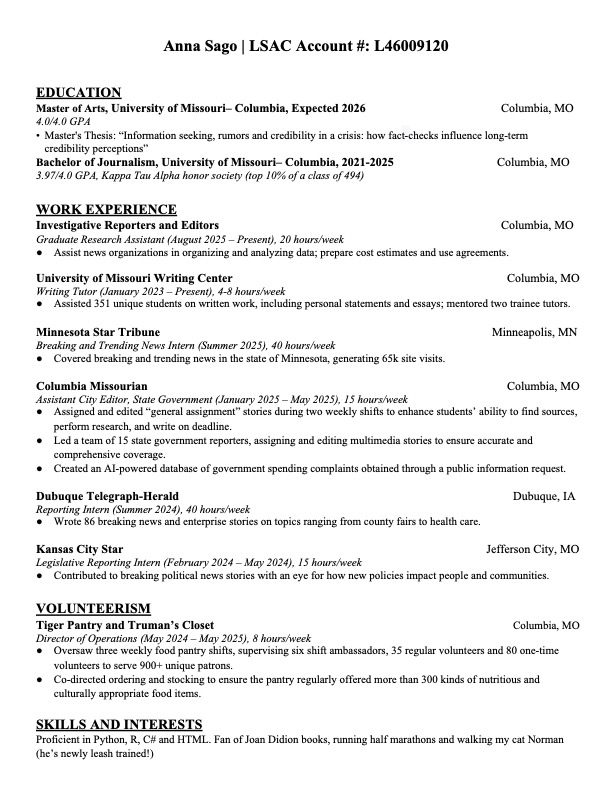

Hi! I'm Anna, a journalist and current graduate student at the University of Missouri, as well as a law school applicant.
Check out some of my selected favorite work below, and click the tabs above to see the full pieces.
Selected Pieces

